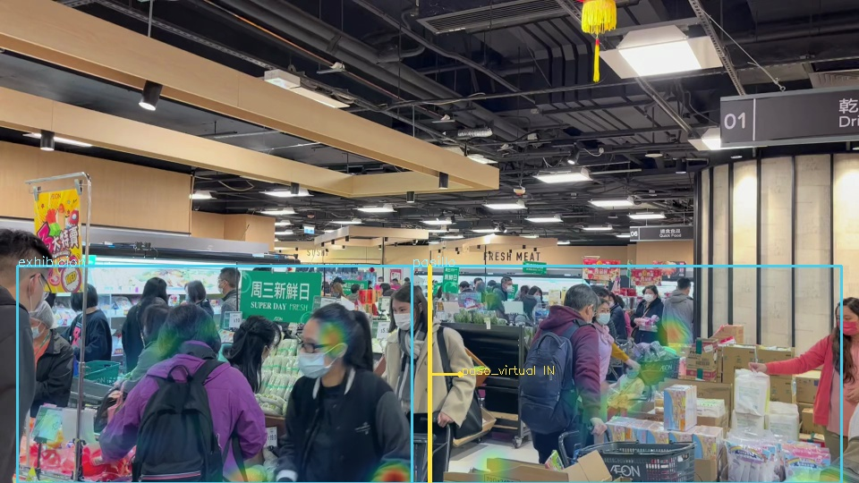
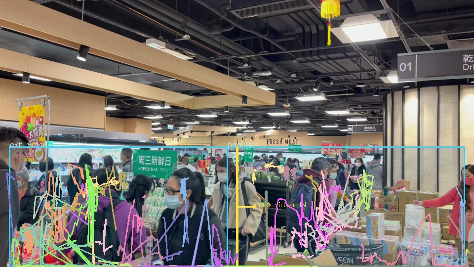

Revisar acumulación en la barra
Ocupación y permanencia pueden señalar episodios para revisar. Para llamarlo tiempo de espera hay que medir fila e inicio de atención.
Queremos que el dueño entienda qué pasó, dónde hubo fricción y qué conviene revisar. Empezamos por convertir video en evidencia de ocupación, permanencia y movimiento.
MVP local · Sin reconocimiento facial · Sin API de inferencia
Una escena de supermercado procesada con YOLOX-S y tracking local. Cajas, IDs de sesión, zonas y trayectorias conectadas a archivos de datos que puedes inspeccionar.
Video sin audio. Fuente: Suika Chan / Pexels 10901926, bajo licencia Pexels. Ni las personas ni las marcas retratadas respaldan el proyecto.
Referencia local del 3 de octubre de 2026. No es una medición de precisión. Los IDs pueden fragmentarse; la línea virtual no es una puerta real. Este clip no permite recomendar cambios de personal o decisiones comerciales.


Estos son casos de uso a validar en cada local. La cámara aporta señales; el contexto y la verificación convierten esas señales en una decisión.
Ocupación y permanencia pueden señalar episodios para revisar. Para llamarlo tiempo de espera hay que medir fila e inicio de atención.
Mapas y trayectorias ayudan a plantear cambios. Compara períodos equivalentes y verifica que la cámara cubra las áreas.
Los cruces en accesos reales pueden apoyar preparación y turnos cuando su precisión esté validada. El resumen diario está pendiente.
Detección, IDs de sesión, zonas, cruces, tiempos, mapas y exportación.
Piloto con cámara fija, errores medidos, salud de captura, reconexión y sesiones durables.
Resumen diario, comparaciones del mismo local, excepciones con evidencia y acceso remoto autenticado.
Integración opcional con ventas y bitácora de mejoras. Sin confundir correlación con causalidad.
Primero medir bien. Después decidir con contexto.